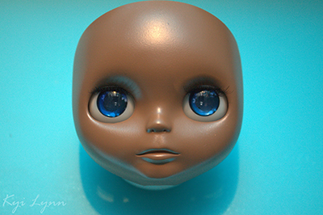
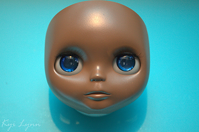
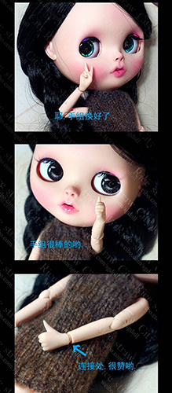

28.07.2014 First of all get some SEM paint from Ebay USA, all other colour will peel off the legs (I tried it myself, trust me, it hurts when this happens to your Blythe after all that work!!). To prepare the parts, sand everything gently even the body with fine sanding paper. Wash the parts with oilfree soap and hang up the body somewhere outside. Shake your SEM well and spray parts and body carefully.

 

28.07.2014 This is OB body that suits for Blythe very well.
This website has been created as part of an assignment in an approved course of study for Curtin University and contains copyright material not created by the author. All copyright material used remains copyright of the respective owners and has been used here pursuant to Section 40 of the Copyright Act 1968 (Commonwealth of Australia). No part of this work may be reproduced without consent of the original copyright owners. See code comments for references.